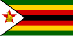

About Me
I am Raphael Shawn Taurai, I was born and raised in Zimbabwe. I am currently a student at Midlands State University, in Zimbabwe taking Data Science and Informatics at undergraduate level. I am also an online student, studying for a Bachelors in Science Degree in Software Development. I love programming and learning new things.
Kwekwe, Zimbabwe

Zimbabwe Flag
Zimbabwe is a landlocked country in Southern Africa with a map shaped like a tea pot. Zimbabwe is popular for it's mineral reserves and tourist destinations. The economy is said to be strong but very unstable at the same time. The climate is the very best Africa can offer.